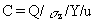
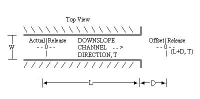
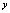

The importance of local circulations on exposures is a function of the size of the plume relative to the scale of the local circulations. Initially the plume is smaller than the local circulation, and the entire plume trajectory will be determined by the local circulation. As the plume travels, the dimensions of the plume increase and the local circulations become progressively less important in computing exposures.
The trajectories of ground-level releases will be affected by local wind channeling. The trajectories of elevated releases will be affected except in cases where the height of the plume is not within the local circulation.
Depending on the local topographical conditions, the trajectories in the immediate vicinity of the release can be important for the computation of both maximum individual and total exposures. The consideration of local channeling is most important in cases where the exposures to people will be significantly changed. In the absence of local populations, the local channeling may still be needed if predicted air concentrations are being evaluated.
The frequency of occurrence of winds in the direction of the downslope flow from the release point are assumed to be enhanced by the local channeling effects. Downslope winds driven by nocturnal cooling are assumed to occur mainly under stable atmospheric conditions. The winds are progressively coupled back into the regional winds either when the plume has dispersed to the height of the channel or at the end of the channel.
Upslope winds are driven by the tendency of warmer air to rise, whereby downslope winds are driven by the tendency of cooler air to fall. The natural warming and cooling processes at the surface make the overlying air layer unstable and stable, respectively. Hence the upslope winds tend to have fast dispersion rates and downwind winds tend to have slow dispersion rates.
The MEPAS atmospheric component computes total exposure to people in the region surrounding the release. This total exposure is the sum of a matrix of stable, neutral, and unstable conditions. The MEPAS local channeling module accounts for the channeling under the slow dispersion (stable) conditions. For neutral and unstable conditions, no special formulations are used to account for channeling.
All stable conditions (Pasquill categories E, F, and G) are assumed to be nocturnal drainage conditions for the site. The winds for these stable conditions are assumed to flow in the downslope direction with a nominal initial wind speed of 2.0 m/s at 1-m height, which is consistent with typical wind observations in complex terrain (Orgill 1981).
Within the channel, the air concentrations for stable conditions are computed using

(81)
where
Q = emission rate (g/s)
C = air concentration (g/m3)
Y = the horizontal dispersion width (m)
u = wind velocity (m/s).
- The other term in the equation, sz,
is as defined in Equation 45. Once the plume becomes as deep as the channel,
it is assumed to start dispersing out of the channel. The plume is approximated
using a sector average "release" of material with initial dispersion equal
to the depth of the channel. An initial width equal to the channel width
is used. The coordinates of this "release" are centered at the point where
the vertical dispersion parameter,sz,
has increased to the depth of the channel.

Between r = 0 and r = L, the dispersion width is defined as follows:
Y =swhen s
Y = W = s
(82)
where sy = lateral dispersion parameter (m).
To simulate the transition in flows at the end of the channel and avoid an abrupt concentration change between the channeled flow and the regional climatological dispersion, a linear interpolation is made between channel and regional concentrations for the direction, T, over the distance, D. This transition distance is assumed to be equal to the channel width, W.
This channeling module is designed to improve the performance of the atmospheric component by accounting for the gross aspects of local channeling in the computation of long-term average exposures. The channeling module provides for directed local plume movement under nocturnal conditions with limited dispersion. Given the complex atmospheric processes found in complex terrain, this module only provides for first-order effects that directly influence the initial movement of the release. If significant wind channeling
Top View
\\\\\\\\\\\\\\\\\\\\\\\\\\\\\\\\\\\\\\\\\\\ º
ÄÂÄÍÍÍÍÍÍÍÍÍÍÍÍÍÍÍÍÍÍÍÍÍÍÍÍÍÍÍÍÍÍÍÍÍÍÍÍÍÍÍÍÍÍÍÍͼ
³ Actual³Release DOWNSLOPE Offset³Release
W ---O--- CHANNEL --> ---O---
³ ³ (0,T) DIRECTION, T ³ (L+D,T)
ÄÁÄÍÍÍÍÍÍÍÍÍÍÍÍÍÍÍÍÍÍÍÍÍÍÍÍÍÍÍÍÍÍÍÍÍÍÍÍÍÍÍÍÍÍÍÍÍ»
//////////////////////////////////////////// º
³<ÄÄÄÄÄÄÄÄÄÄÄÄÄ L ÄÄÄÄÄÄÄÄÄÄÄÄÄÄ>³<ÄÄDÄÄ>³
is expected in the immediate vicinity of the release, this module provides a means of accounting for the local channeling effects.